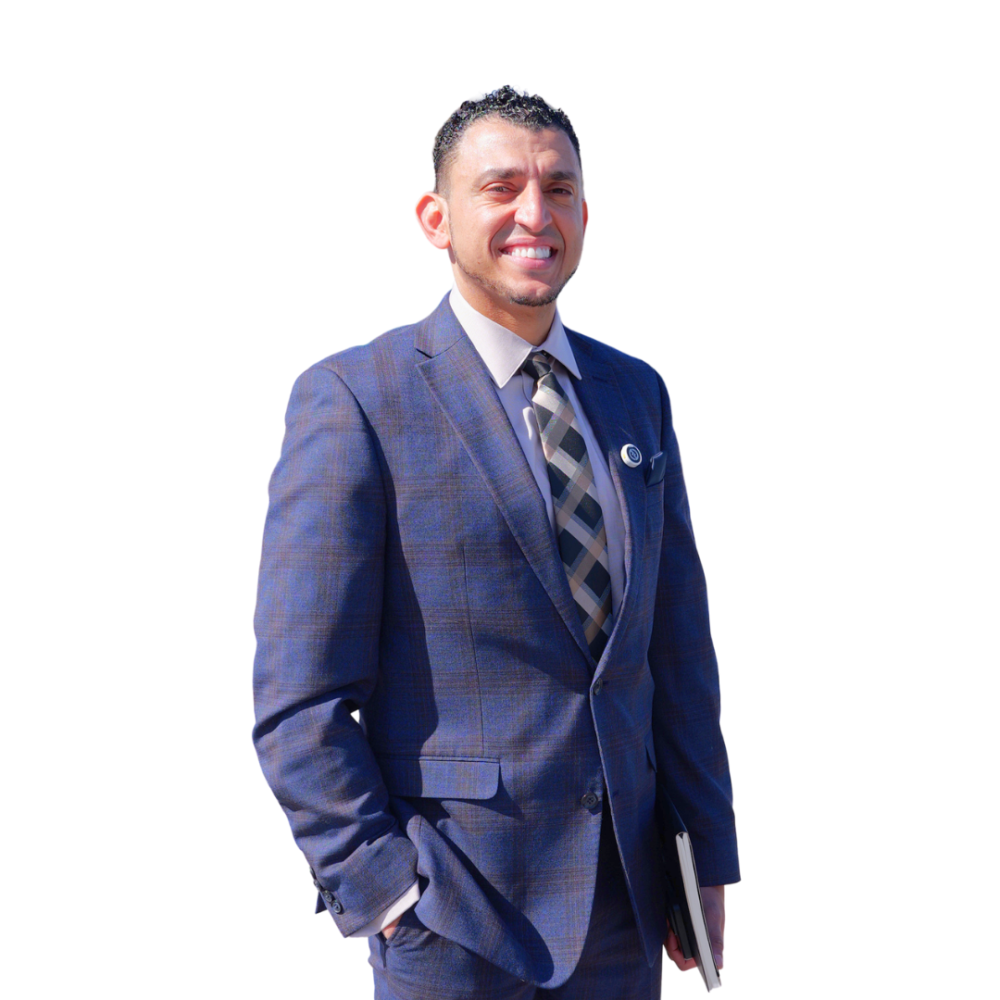

FULL TALK
Watch “Beautiful Patience”
14 minutes that will change how you see adversity, resilience, and the human capacity for purposeful growth.

TEDx • 14 min
A TEDx Talk by Attorney Ibrahim J. Awad, Esq.
Pain doesn't choose your story. Your response to it does. In this TEDx talk, Attorney Ibrahim Awad traces his journey from a child who couldn't speak English, enduring bullying and isolation, to a lawyer who one day represented the very boy who tormented him and won. The lesson at the center of it all: sabr jameel, beautiful patience that transforms suffering into compassion, courage, and service.
Watch the Talk14 minutes that will change how you see adversity, resilience, and the human capacity for purposeful growth.
Ibrahim opens with a deceptively simple observation: pain, on its own, is neutral. What it produces is entirely determined by your response. It can make a villain who retaliates against the world that hurt them. Or it can make a hero who channels that wound into compassion. That choice is the whole talk.
He makes it personal. Ibrahim immigrated as a child who couldn't speak English, endured teasing during Ramadan, and was relentlessly bullied by a boy named Alex. Islamic practices, including prayer, fasting, and the discipline of Ramadan, taught him sabr: patience and humility. Martial arts gave that patience a backbone, redirecting his trauma into strength and discipline rather than bitterness and retaliation.
Those same lessons carried him through law school, through founding a practice he branded the “karate attorney,” and eventually to speaking at his mosque about sabr jameel, beautiful patience, the Qur'anic concept that reframes trials not as sources of suffering but as gifts that build the person you are meant to become.
Years later, Alex comes back into Ibrahim's life. The boy who once bullied him has been injured and needs a lawyer. Ibrahim takes the case, wins it, and hugs him. That moment is the talk's beating heart: patience doesn't just heal the one who practices it. It heals the relationship, and sometimes the person who caused the harm.
Pain is universal — but the path it puts you on is not. Every person who suffers faces a fork: harden against the world, or let the wound open you toward greater compassion.
The Qur'anic concept of sabr jameel reframes trials not as sources of bitterness but as purposeful gifts — a form of patience that is active, dignified, and spiritually grounding.
Mass suffering numbs us. A single intimate story — a soldier waking a child at night — unlocks empathy that statistics never can. That insight drives his nonprofit, Polystory.
From Prophet Jacob's grief to Moses stepping into the sea, Ibrahim draws on scripture to show that true patience is not passive waiting — it is faith-driven courage that acts in the face of uncertainty.
When pain arrives — and it will — you face a choice: let it harden you into someone who retaliates against the world that hurt you, or let it hollow you out and fill you back up with something better. That is sabr jameel. That is beautiful patience.
The core lessons from Ibrahim Awad's TEDx talk — drawn directly from his story.
Suffering is not the variable — your response is. The same wound that embitters one person can open another. The choice between those two paths is the most important decision you will ever make.
Beautiful patience is not resignation — it is a spiritual reframe. What feels like a punishment may be the very thing shaping you into someone capable of helping others through their own version of it.
Martial arts didn't erase Ibrahim's pain from bullying and isolation — it gave that energy a direction. Trauma channeled with discipline becomes strength. Suppressed, it festers into resentment.
When Alex — the boy who bullied Ibrahim — came back injured and in need of help, Ibrahim represented him, won his case, and embraced him. Patience that only lasts until you have power isn't patience at all.
Remote mass suffering numbs us. One child's specific experience — one soldier waking a family at 2 a.m. — breaks through. Ibrahim cofounded Polystory to tell those intimate stories and make injustice impossible to look away from.
Jacob wept but never lost faith. Moses walked into the sea before it parted. Ibrahim's challenge to the audience: practice the kind of patience that doesn't just endure — it moves forward anyway, even into uncertainty.

Ibrahim Awad decided to become an attorney long before law school. As a high schooler, he was the cornerstone of his school's mock trial team, leading them to their first Regional Championship in over a decade. His unconventional path — from Dalton State College to the Whitfield County District Attorney's office to founding his own firm — taught him firsthand what it means to endure and to fight.
As a Georgia personal injury attorney, Ibrahim fights for accident victims who are up against insurance companies with unlimited resources and professional adjusters trained to minimize every claim. The same patience, composure, and purposeful persistence he describes on the TEDx stage is what he brings to every case he takes on.
His TEDx talk in Ocala was not a lecture from a distance — it was a lived testimony. The principles of Beautiful Patience have guided Ibrahim through a courtroom career defined by standing up for those who cannot stand up for themselves.